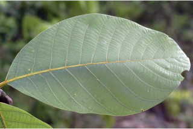
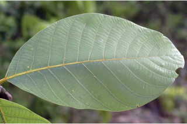

Trees buttressed, up to 30 m tall.
30 ಮೀ.ವರೆವಿಗೆ ಬೆಳೆಯುವ ,ಆನಿಕೆಗಳನ್ನುಳ್ಳ ಮರಗಳು.
വപ്രമൂലമുളള, 30 മീറ്റര് വരെ ഉയരമുളള മരങ്ങള്.
மரங்கள் தாங்கு வேர்களுடையது (பட்ரஸ்டு), 30 மீ. உயரம் வரை வளரக்கூடியது
Bark brownish, smooth, lenticellate; blaze light orange.
ತೊಗಟೆ ನಯವಾಗಿದ್ದು ಕಂದು ಬಣ್ಣದಲ್ಲಿರುತ್ತದೆ ಮತ್ತು ವಾಯು ವಿನಿಮಯ ಬೆಂಡು ರಂಧ್ರಗಳ ಸಮೇತವಿರುತ್ತವೆ;ಕಚ್ಚು ಮಾಡಿದ ಜಾಗ ತೆಳು ಕಿತ್ತಳೆ ಬಣ್ಣದಲ್ಲಿರುತ್ತದೆ.
ശ്വസനരന്ധ്രങ്ങളുളള, മിനുസമായ, തവിട്ട് നിറത്തിലുളള പുറംതൊലി; വെട്ട്പാടിന് ഇളം ഓറഞ്ച് നിറം.
மரத்தின் பட்டை ப்ரவுன் நிறமானது, வழுவழுப்பானது, லெண்டிசெல் உடையது; உள்பட்டை வெளிறிய ஆரஞ்சு நிறமானது.
Branchlets subterete, rusty tomentose.
ಕಿರುಕೊಂಬೆಗಳು ಉಪ- ದುಂಡಾಗಿರುತ್ತವೆ ಮತ್ತು ತುಕ್ಕು ವರ್ಣದ ದಟ್ಟ ಮೃದು ತುಪ್ಪಳದಿಂದ ಕೂಡಿರುತ್ತದೆ.
തുരുമ്പന് രോമിലമായ, ഏതാണ്ട് ഉരുണ്ട ഉപശാഖകള്.
சிறிய நுனிக்கிளைகள் குறுக்குவெட்டுத் தோற்றத்தில் கிட்டதட்ட வளையம் போன்றது, துரு போன்ற உரோமங்களுடையது.
Leaves simple, alternate, spiral; petiole 1.3-3 cm long, slightly canaliculate above, rusty tomentose; lamina 11-27 x 5-12.5 cm, broadly elliptic to elliptic-obovate, apex obtuse to rounded, base acute, sometimes rounded, margin entire, coriaceous, drying reddish brown beneath, pubescent when young at least on nerves and midrib beneath; midrib raised above; secondary_nerves 10-15 pairs, strong slightly impressed above; tertiary_nerves obliquely_percurrent, strong.
ಎಲೆಗಳು ಸರಳವಾಗಿದ್ದು ಪರ್ಯಾಯ ಮತ್ತು ಸುತ್ತು ಜೋಡನಾ ವ್ಯವಸ್ಥೆಯಲ್ಲಿ ಇರುತ್ತವೆ; ತೊಟ್ಟುಗಳು 1.3-3 ಸೆಂ.ಮೀ. ಉದ್ದವಿದ್ದು ಮೇಲ್ಭಾಗದಲ್ಲಿ ಸ್ವಲ್ಪಮಟ್ಟಿಗೆ ಕಾಲುವೆಗೆರೆ ಸಮೇತವಿರುತ್ತದೆ ಮತ್ತು ತುಕ್ಕು ಬಣ್ಣದ ದಟ್ಟ ಮೃದು ತುಪ್ಪಳದಿಂದ ಕೂಡಿರುತ್ತದೆ ;ಪತ್ರಗಳು 11-2 7 X5-12.5 ಸೆಂ.ಮೀ.ವರೆಗಿನ ಗಾತ್ರ ಹೊಂದಿದ್ದು ವಿಶಾಲವಾದ ಅಂಡವೃತ್ತದಿಂದ ಅಂಡವೃತ್ತ-ಬುಗುರಿಯವರೆಗಿನ ಆಕಾರ ಹೊಂದಿರುತ್ತವೆ ;ತುದಿ ಚೂಪಲ್ಲದುದರಿಂದ ದುಂಡಾದ ರೀತಿಯಲ್ಲಿದ್ದು ಬುಡ ಚೂಪಾಗಿ ಕೆಲವು ವೇಳೆ ದುಂಡಾಗಿರುತ್ತದೆ;ಅಂಚು ನಯವಾಗಿರುತ್ತದೆ; ಮೇಲ್ಮೈ ತೊಗಲನ್ನೋಲುವ ಮಾದರಿಯಲ್ಲಿರುತ್ತದೆ;ಪತ್ರ ತಳಭಾಗ ಒಣಗಿದಾಗ ಕೆಂಪು ಮಿಶ್ರಿತ ಕಂದು ಬಣ್ಣದ -ಲ್ಲಿರುತ್ತದೆ; ಎಳೆಯದಾಗಿದ್ದಾಗ ಪತ್ರದ ತಳಭಾಗದ ನಾಳಗಳು ಮತ್ತು ಮಧ್ಯ ನಾಳಗಳ ಮೇಲಾದರೂ ಮೃದು ತುಪ್ಪಳವಿರುತ್ತದೆ;ಮಧ್ಯನಾಳ ಪತ್ರದ ಮೇಲ್ಭಾಗದಲ್ಲಿ ಮೇಲೆದ್ದಿರುತ್ತದೆ; ಪತ್ರಗಳು ಎರಡನೇ ದರ್ಜೆಯ ನಾಳಗಳು 10-15 ದೃಢವಾದ ಜೋಡಿಗಳಿರುತ್ತವೆ ಮತ್ತು ಕೊಂಚವಾಗಿ ಮೇಲ್ಭಾಗದಲ್ಲಿ ಅಚ್ಚೊತ್ತಿದಂತಿರುತ್ತವೆ; ಮೂರನೇ ದರ್ಜೆಯ ನಾಳಗಳು ಓರೆಯಾಗಿದ್ದು ಎಲೆ ದಿಂಡಿಗೆ ಅಡ್ಡವಾಗಿ ಕೂಡುತ್ತವೆ.
ലഘുവായ ഇലകള്, ഏകാന്തരക്രമത്തില്, സര്പ്പിളമായടുക്കിയതാണ്; ചെറുതായി ചാലുളള തുരുമ്പന് രോമിലമായ, ഇലഞെട്ടിന് 1.3 സെ.മീ തൊട്ട് 3 സെ.മീ വരെ നീളം; പത്രഫലകത്തിന് 11 സെ.മീ തൊട്ട് 27 സെ.മീ വരെ നീളവും 5 സെ.മീ തൊട്ട് 12.5 സെ.മീ വരെ വീതിയുമാണ്, വീതിയേറിയ ദീര്ഘവൃത്താകാരം തൊട്ട് ദീര്ഘവൃത്താകാര-അപഅണ്ഡാകാരവുമാകാം, പത്രാഗ്രം ഉപകോണാകാരംതൊട്ട് വൃത്താകാരം വരെയാകാം, പത്രാധാരം നിശിതമാണ്, ചിലപ്പോള് വൃത്താകാരത്തിലും, അരികുകള് അവിഭജിതമാണ്, ചര്മ്മിലപ്രകൃതം, കീഴെ ഞരമ്പുകളിലും മുഖ്യസിരയിലെങ്കിലും ഉണങ്ങുമ്പോള് കീഴെ ചുവപ്പുകലര്ന്ന തവിട്ടു നിറമാണ്; ഇളതായിരിക്കുമ്പോള് നനുത്ത രോമിലമാണ്, മുഖ്യസിര മുകളില് ഉയര്ന്നതാണ്, മുകളില് ലഘുവായി മുദ്രിതമായ, 10 മുതല് 15 വരെ ജോഡി ദ്വിതീയ ഞരമ്പുകള്; ചരിഞ്ഞ പെര്കറന്റ് വിധത്തിലുളള, ദൃഢമായ തൃതീയ ഞരമ്പുകള്.
இலைகள் தனித்தவை, மாற்றுஅடுக்கமானவை, சுழல் போன்று அமைந்தவை; இலைக்காம்பு 1.3-3 செ.மீ. நீளமானது, குறுக்குவெட்டுத் தோற்றத்தில் சிறிதளவு கேனாலிகுலேட், துருப்போன்ற உரோமங்களுடையது; இலை அலகு 11-27 X 5-12.5 செ.மீ., அகன்ற நீள்வட்டம் முதல் நீள்வட்டம்-தலைகீழ் முட்டை வடிவானது, அலகின் நுனி மொட்டையானது முதல் வட்டமானது, அலகின் தளம் கூரியது, சிலசமயங்களில் வட்டமானது, அலகின் விளிம்பு முழுமையானது, கோரியேசியஸ், உலரும் போது சிவப்பு கலந்த ப்ரவுன் நிறமடைகிறது, இளம் இலைகளின் பின்புறத்திலுள்ள நரம்புகள் உரோமங்களுடையவை; மையநரம்பு மேற்பரப்பில் அலகின் பரப்பைவிட உயர்ந்தது; இரண்டாம் நிலை நரம்புகள் 10-15 ஜோடிகள், சிறிது அலகின் பரப்பைவிட பள்ளமானது; மூன்றாம் நிலை நரம்புகள் விளிம்பை நோக்கிய சாய்ந்த பெர்க்கரண்ட், தெளிவானது.
Flowers in sessile or subsessile clusters of umbels on old branches, rusty tomentose.
ಹೂಗಳು ವೃಂತರಹಿತ ಅಥವಾ ಉಪ-ವೃಂತರಹಿತ ಹಳೆಯ ಕವಲುಗಳ ಮೇಲಿನ ಪೀಠಛತ್ರಗಳ ಗುಚ್ಛಗಳಲ್ಲಿರುತ್ತವೆ ಮತ್ತು ತುಕ್ಕು ಬಣ್ಣದ ದಟ್ಟ ಮೃದುತುಪ್ಪಳದಿಂದ ಕೂಡಿರುತ್ತವೆ.
പൂക്കള് മൂത്ത ശാഖകളിലുണ്ടാകുന്ന തുരുമ്പന് രോമിലമായ, അവൃന്തകമോ ഉപഅവൃന്തമോ ആയ ഛത്രമഞ്ജരി കൂട്ടങ്ങളായുണ്ടാകുന്നു.
மலர்கள் காம்பற்றவை அல்லது மிகச்சிறிய காம்புடையவை, கொத்தான அம்பல் வகை மஞ்சரி, முதிர்ந்த கிளைகளில் காணப்படுபவை, துருப்போன்ற உரோமங்களுடையவை.
Berry, ellipsoid, to 2.5 cm long, on a deep obconic warted fruiting_perianth_cup; seed 1.
ಬೆರ್ರಿ ಅಂಡವೃತ್ತಾಕಾರದಲ್ಲಿದ್ದು 2.5ಸೆಂ.ಮೀ.ವರೆಗಿನ ಉದ್ದ ಹೊಂದಿರುತ್ತದೆ ಮತ್ತು ಆಳವಾದ ತಲೆಕೆಳಗಾದ ಶಂಖುವಿನ ಆಕಾರದ, ಸಣ್ಣ ಸಣ್ಣ ಗಂತಿಗಳನ್ನುಳ್ಳ ಪುಷ್ಪಾವರಣದ ಬಟ್ಟಲಿನ ಮೇಲೆ ಆಸಿನವಾಗಿರುತ್ತದೆ ಮತ್ತು ಒಂದು ಬೀಜವನ್ನು ಒಳಗೊಂಡಿರುತ್ತದೆ.
ഒറ്റവിത്തുളള, കായ, കുരുക്കളുളള, ആഴമേറിയ അപകോണാകാര പരിദളക്കപ്പിനകത്തുളള, 2.5 സെ.മീ വരെ നീളമുളള ദീര്ഘ ഗോളാകാര ബെറിയാണ്.
முழுச்சதைகனி (பெர்ரி), நீள்வட்ட வடிவானது, 2.5 செ.மீ. நீளமானது, தலைகீழ் கூம்பு போன்ற ப்பீரியான்ந்த் கோப்பையினுள் ஆழமாகமைந்தது; சொரசொரப்பான வெளிப்புற சுவருடையது; விதை ஒன்றுடையது.


 
